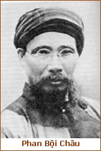

Ngày 29 tháng 10 năm 1940, tại kinh thành Huế, bên dòng sông Hương tự muôn đời lờ lững trôi xuôi, trong túp lều tranh ba gian nương mình trên Bến Ngự, nhà chí sĩ cách mạng kiêm thi sĩ Phan Bội Châu đã âm thầm trút hơi thở cuối cùng, thọ 74 tuổi, sau 15 năm sống giam lỏng trong cái cảnh:

.
Những ước anh em đầy bốn biển,
Ai ngờ trăng gió nhốt ba gian…
Từ khi tử thần còn chờ đợi, trên giường bệnh, thi sĩ cách mạng chưa bao giờ nhụt chí đấu tranh mà phải ép mình buông tay theo số mệnh vô tình, nhà thơ ái quốc thuần tuý đó đã từng đọc cho thân nhân chép lại bài thơ mênh mang cảm khái:
Mạc sầu tiền lộ vô tri kỷ
Thiên hạ thùy nhân bất thức quân.
Bẩy mươi tư tuổi trót phong trần,
Nay gặp bạn mới tinh thần hoạt hiện.
Những ước anh em đầy bốn biển,
Ai ngờ trăng gió nhốt ba gian.
Sống xác thừa mà chết cũng xương tan,
Câu tâm sự gửi chim ngàn cá biển.
Mừng được đọc bài văn “sinh vãn”.
Chữ đá vàng in mấy đoạn tâm can.
Xét mình nay sức mỏng trí thêm khan.
Lấy gì đáp khúc đàn tri kỷ?
Nga nga hồ chí tại cao sơn,
Dương dương hồ chí tại lưu thủy,
Đàn Bá Nha mấy kẻ thưởng âm?
Bỗng nghe qua, khóc trộm lại đau thầm.
Chung Kỳ chết, ném cầm không gẩy nữa,
Nay đương lúc tử thần chờ trước cửa.
Có vài lời ghi nhớ để về sau
Chúc phường hậu tử tiến mau…
- Thực là những lời tâm sự thống thiết, có lúc nghẹn ngào khiến người nghe muốn thùy lệ. Nhưng thống thiết nghẹn ngào mà vẫn thấm đượm cái giọng khảng khái trầm hùng của một tấm lòng sắc son vàng đá với non sông.
Chất thơ Sào Nam rung cảm chúng ta một cách vừa say sưa, vừa thấm thía. Chưa nói đến tính chất cách mạng, tính chất ái quốc, tiếng thơ đó khích động, chúng ta trước hết bằng những tiềm lực mầu nhiệm của thi ca thuần túy: sức quyến rũ của âm thanh, vần điệu, sức gợi cảm của hình ảnh, sắc màu; và giá trị của thi tứ hòa hợp cùng giá trị của kỹ thuật, từ chương, tất cả tạo nên một bản sắc thi nhân độc đáo, nhiều khi biểu hiện sâu đậm hơn cả tính chất ái quốc, cách mạng.
Vẫn biết, nói tới cụ Phan Bội Châu, không nên và cũng không thể tách rời sự nghiệp thi ca khỏi sự nghiệp cách mạng: phải có đủ cả mấy yếu tố “thi sĩ, chiến sĩ, chí sĩ” chung đúc trong một tinh thần “kẻ sĩ” trung kiên, mới kết tụ được đúng cái bản ngã Phan Bội Châu toàn vẹn, mới phát tiết được hết những tinh hoa lỗi lạc thuần chất Phan Bội Châu. Vả lại, ở Sào Nam tiên sinh, con người chí sĩ, cách mạng không hề tương phản với con người thi sĩ. Làm thơ, đối với tiên sinh, chính là để phụ họa, cổ xuý cho cách mạng, và làm cách mạng cũng chính là một quan niệm sống cho đẹp, sống cho hào, sống cho “có thi vị”. Trên bước đường hoạt động đầy sóng gió, tiẻn sinh vẫn nhìn cách mạng với tầm mắt phóng khoáng của một nhà thơ, không phải để tránh nhìn thẳng vào thực lế, nhưng chính là để giữ vững niềm tin tuyệt đối vào cách mạng.
Có thể nói: làm cách mạng, đối với tiên sinh, cũng chính là làm một bài thơ sống động nhất, hào hùng nhất, một bài thơ siêu việt hàm xúc đủ tiết điệu bổng trầm.
Ý niệm đã biểu lộ một nhân sinh quan vừa hùng hậu, vừa lãng mạn, mà chúng ta có thể tìm thấy trong số các bài thơ của tiên sinh- cả trong những bài thơ kêu gọi đồng bào, cảnh tỉnh quốc dân.
Chúng ta nhận thấy: tinh thần cách mạng nhiệt thành của nhà chí sĩ đã khơi mạch nguồn rung cảm mãnh liệt cho hồn thơ của thi sĩ, khiến hồn thơ đó thẳng đường tung cánh bay cao; ngược lại, hồn thơ của thi sĩ cũng có tác dụng hưng khải tinh thần đấu tranh của nhà cách mạng, gây thêm hào hứng cho người chiến sĩ, đem màu sắc huyền dịu của thi ca tô đẹp thêm khung trời lý tưởng, và tạo cho cuộc đời cách mạng đầy hiểm nguy bất trắc một phong vị phiêu lưu quyến rũ khác thường.
- Hãy đọc bài thơ lưu giản sau đây, do tiên sinh khẩu chiếm để từ biệt anh em đồng chí, trước khi lên đường bôn ba hải ngoại:
Sinh vi nam tử yếu ly kỳ,
Khẳng hứa càn khôn tự chuyển đi.
Ư bách niên trung tu hữu ngã,
Khởi thiên tải hạ cánh vô thùy.
Giang sơn tử hỷ sinh đồ nhuế,
Hiền thánh liêu nhiên tụng diệc si.
Nguyên trục trường phong Đông Hải khứ,
Thiên trùng bạch lãng nhất tề phi.
Dịch nôm
Khác thường hay nhẩy mới là trai,
Chẳng chịu văn xoay mặc ý trời.
Trong cuộc trăm năm đành có tớ.
Rồi sau muôn thuở há không ai?
Non sông đã mất, mình khôn sống,
Hiền thánh đâu còn, học cũng hoài.
Đông Hải xông pha nương cánh gió,
Nghìn làn sóng bạc múa ngoài khơi.
(Ngục Trung thư)
Đó là ngày mồng hai tháng giêng năm Ất Tỵ (1905), cụ Phan Bội Châu từ Quảng Nam tới Hải Phòng, rồi từ Hải Phòng ra Moncay, giả làm một chú khách đi buôn, cạo đầu gióc bím, bí mật đáp một chiếc thương thuyền vượt biển sang Tàu.
Thực tế là cả một cuộc tranh đấu gay go, với bao nhiêu biến cố bất kỳ, bao nhiêu dặm trường gian khổ. Nhưng hồn thơ đã biến cải sự vật. Hồn thơ đã tỏa rộng chất men kỷ diệu vào sương gió, khiến cho cuộc đăng trình vượt biển của nhà cách mạng trở nên một cuộc viễn du hào hứng của tay lạc phách giang hồ.
Trước cái cảnh:
Thiên trùng bạch lãng nhất tề phi…
Hình ảnh nhà cách mạng lênh đênh hải ngoại tự nhiên hiện lên ngạo nghễ, đẹp một vẻ đẹp vừa ngang tàng vừa phong nhã, không khác hình ảnh một Lý Bạch giữa thời khắc “thi hành tiếu ngạo lăng thương châu”, hoặc hình ảnh một Cao Bá Quát trước khung cảnh “hải thượng bạch ba như bạch đầu… Trung hữu điểm điểm phù khinh âu”…
Tuy trong con người Phan Sào Nam, cái bản ngã cách mạng vẫn hòa đồng cảm ứng khăng khít với cái bản ngã thi sĩ và thường thường hỗ tương ảnh hưởng lẫn nhau, nhưng phân tách kỹ, chúng ta sẽ nhận thấy cái bản ngã thi sĩ của tiên sinh nhiều lúc hứng khởi rạt rào gần như che lấp hẳn con người thực tế. Những lúc đó, nhà chiến sĩ cách mạng biểu hiện bản sắc rất mờ nhạt, mà chỉ thấy nổi bật lên cái bóng dáng phong lưu tài tử của người thơ cùng gương mặt tao ông, thi khách hào sảng.
Đôi cánh mộng của thi ca đã nâng cao người “khách phiêu bồng” hay vượt lên vùng trời thanh khí, để không cần lưu ý tới những bước thăng trầm tân khổ của cuộc đời, không cần phiền bận vì những bất bằng điên đảo của thế sự. Cuộc sống gai lửa cùng những sự thực tàn nhẫn mà người chiến sĩ cách mạng cần phải nhìn thẳng vào, không một chút ảo tưởng, để phòng ngừa, đối phó, rút kinh nghiệm, cuộc sống thực tế đó, người thơ Phan Sào Nam khi mà thi hứng đã nhập thần, chỉ coi nhẹ như lớp tuồng vân cẩu tự nhiên, và buông xuôi tất cả sự đời trong một tiếng cười khà bất chấp.
Chẳng thế mà biết bao lần vào tù, ra khám, trải qua bao nhiêu thử thách phũ phàng; nơi quê nhà đã phải ẩn mình trốn tránh, miền khách địa lại gặp nhiều cơn tai biến bất ngờ, tiên sinh chẳng những đã không ngã lòng nản chí, mà còn giữ được cái phong thái ung dung tự tại của một kẻ sĩ hào sảng, vốn tin vào định luật vô thường của tạo hóa, nên không để cho cái “biến” của thế sự lay chuyển được tinh thần an nhiên.
Khi ở Quảng Đông, Phan Bội Châu tiên sinh bị đô đốc Long Tế Quang bắt giam vào ngục chung với Mai Quân Lão Bạng, một giáo sĩ đạo Thiên Chúa, người tỉnh Nghệ An, bỏ nước ra ngoài hoạt động chính trị, lần này bị bắt là lần thứ ba, và khi nghe Mai Quân than thở, hận mình vì nước bôn ba, chưa làm nên việc gì, chỉ những giam hãm lao tù, mất hết ngày giờ quý báu, Phan tiên sinh đã đọc miệng bài thơ sau để an ủi Mai Quân:
Phiêu hồng ngã bối các tha hương.
Tân khổ thiên quân phận ngoại thường.
Tánh mạng kỷ hồi tần tử địa,
Tu mi tam độ nhập linh đường.
Kinh nhân sự nghiệp thiên đào chú
Bất thế phong vân đế chủ trương.
Giả sử tiền đồ tận di thản
Anh hùng hào kiệt giã dung thường
Dịch nôm
Bơ vơ đất khách bác cùng tôi,
Riêng bác cay chua nếm đủ mùi.
Tính mạng bao phen gần chết hụt,
Mày râu, ba lượt bị giam rồi.
Trời toan đại dụng nên rèn chi,
Chúa giúp thành công tất có hồi.
Nếu phải đường đời bằng phẳng hết,
Anh hùng hào kiệt có hơn ai.
Lời thơ đượm cái giọng ngang tàng khí phách đầy tự tin, chẳng khác một Nguyễn Công Trứ với cái ngông rất nghệ sĩ, rất tài tử của “chí nam nhi”. Những lúc này, quả thực người thơ có nhiễm phần nào cái tư tưởng phóng nhiệm của Lão Trang, và như vậy, đã gây thêm hào hứng rất nhiều cho nhà cách mạng.
Trên bước đường tranh đấu gian khổ của người chiến sĩ cách mạng, tránh sao khỏi những đổ vỡ, thất bại? Và người chiến sĩ, dẫu kiên gan bền chí như cụ Phan Bội Châu, cũng không tránh khỏi những phút giây khủng hoảng tinh thần trầm trọng, những thời khắc:
“Ưu thế kỷ hồi thương hải khấp.
Kinh nhân nhất chỉ ngọc sơn đồi”.
nghĩa là:
“Lo nước bao phen sa huyết lệ,
Tin quê đưa tới luống kinh tâm”…
Đó là vào những năm 1909-1910, khi Học sinh đoàn Việt Nam ở Nhật Bản bị giải tán: “Kinh tế hết phương” và “Ngoại giao bịt lối”, anh em du học sinh đành phải từ giã đất nước Phù Tang mà đi. Cụ Phan và Kỳ Ngoại Hầu Cường Để cũng bị chính phủ Nhật buộc phải xuất cảnh. Bao nhiêu sách vở truyền đơn của cụ in ra để cổ động quốc dân đều bị nhà đương cuộc Nhật tịch thâu hết (1).
Tháng tư, mùa hạ, năm Kỷ Dậu (1909), với số tiền của đảng gửi tới, cụ đem trao hết cho một hiệu buôn Nhật để họ lén mua quân giới cho mình. Quân giới mua rồi, do Đặng Tử Mẫn bí mật chở qua Hương Cảng. Lúc ấy là hạ tuần tháng năm, cụ Phan cũng đã từ Nhật trở về Hương Cảng. Nghe tin nước nhà đưa sang: Đề Thám đang kịch chiến với quân Pháp, cụ quyết định phải chuyên chở khí giới về cứu viện họ Hoàng, đồng thời thực hiện chủ trương bạo động mà cụ hằng dự tính. Muốn chở quân giới về nước nhà, tất phải mượn đường Xiêm vào Trung Việt, vậy cụ lập tức lên đường sang Vọng Các, tìm cách yết kiến nhà cầm quyền nước Xiêm, yêu cầu họ giúp đỡ mình, nhưng họ dùng dằng chưa quyết.
Cụ lại giã từ Vọng Các đi Nam Dương, tìm Chương Bình Lân là một đảng viên cách mạng Trung Hoa, nhờ Chương viết một bức thư giới thiệu cụ với lãnh tụ đảng. Bàn định xong, cụ tới một hãng tầu Trung Hoa thương thuyết với họ về khoản tiền chuyên chở.
Không ngờ, trung tuần tháng 2 năm Canh Tuất (1910), cụ ở Nam Dương trở về, bỗng nghe tin: chính phủ Pháp đàn áp dữ quá, người chủ não của Đảng ở trong nước là ông Ngư Hải bị nạn, việc đảng vỡ lở tứ tung. Bao nhiêu quân giới giấu ở Hương Cảng, vì sự đình trệ lâu ngày mà tiết lộ đến tai mắt nhà đương cuộc Anh ở Hương Cảng, tất cả hơn 10 hòm súng đạn đều bị chính phủ Anh tịch thu hết (2).
Trước những biến cố khốc hại như vậy, nhà cách mạng Phan Sào Nam, dù vững tinh thần đến mấy, cũng không khỏi nao lòng, và bất giác phải thốt lên tiếng thở dài phẫn khích:
“Khả vô mãnh hỏa thiêu sầu khứ,
Thiên hựu cuồng phong tống hận lai”.
Nghĩa dịch:
“Đã không ngọn lửa thiêu sầu rụi.
“Lại có cơn giông thổi giận thêm…
Còn bao nhiêu tai biến kinh tâm khác, khả dĩ khiến cho một tấm gan thiết thạch phải xúc động: tin nước nhà mỗi lúc càng thêm bi đát. Càc đồng chí hoạt động trong nước, kẻ bị bắt, người bị đày. Phong trào cách mạng hải ngoại cũng không phấn khởi hơn, đã có lúc hầu như tan rã.
Cho tới lúc chính bản thân mình cũng bị giam cầm, tù ngục, mà lại bị giam cầm giữa miền khách lạ bơ vơ. Nếu nhìn thẳng vào hoàn cảnh thực tế, không viển vong, không ảo tưởng, có lẽ nhà chí sĩ cách mạng Phan Sào Nam sẽ chỉ thấy toàn một màu đen u ám, một ấn tượng hết sức bi quan. Nhưng nguồn thi cảm phong phú của nhà thơ đã tạo riêng một không khí tiêu dao khoái hoạt, không phải để lẩn trốn thực tế, nhưng để nuôi dưỡng tinh thần, giữ vững phong độ, và hun đúc huyết tinh cho bền.
Chặng đường hoạt động của nhà cách mạng, khi bị dồn vào bốn chản tường nhà giam, thì hiển nhiên phải coi như một bước thất bại, ít nhất cũng là một bước cản trở, làm giảm bớt rất nhiều cái đà bay nhẩy tung hoành. Nhưng với nhãn quan phóng khoáng của thi sĩ, bốn bức tường nhà giam phải đâu đã có hiệu lực trói buộc nổi bước chân lãng tử. Hồn thơ vẫn bay bổng tuyệt vời, có thể vượt qua tất cả mọi chướng ngại trần gian. Lao tù, đầy ải xét ra không hề kìm hãm nổi cái chí bốn phương của nhà thơ cách mạng Sào Nam. Và lao tù đã không ngăn được tiên sinh làm những vần thơ ngạo mạn:
Vẫn là hào kiệt, vẫn phong lưu,
Chạy mỏi chân thì hãy ở tù.
Đã khách không nhà trong bốn biển,
Lại người có tội giữa năm châu
Bủa tay ôm chặt bồ kinh tế
Mở miệng cười tan cuộc oán thù
Thân nọ vẫn còn, còn sự nghiệp
Bao nhiêu nguy hiểm sợ gì đâu?
Vẫn có cái “hào” của Nguyễn Công Trứ. Thêm cái ‘‘ngất ngưởng” say của Tản Đà. Và đáng kể hơn nữa có cả cái an nhiên thích thảng của một Nguyễn Bỉnh Khiêm. Nhà tù ‘‘của’’ nhà thi sĩ cách mạng Phan Bội Châu tưởng chừng cũng giống như “Bạch Vân Am” của cư sĩ họ Nguyễn – nơi ẩn dật, ẩn cư, chốn tiêu dao ngày tháng. Và khi Sào Nam tiên sinh tuyên bố rất thản nhiên:
Chạy mỏi chân thì hãy ở tù.
thiết tưởng cũng không khác cái phong độ của Nguyễn Bỉnh Khiêm nằm khềnh trong am cỏ, gác chân đọc sách, hoặc ung dung ngồi dưới bóng cây xanh, vui cái vui của người mặc khách lạc đạo vong bần:
‘‘Một mai, một cuốc, một cần câu…’’
Con người thi sĩ “phong lưu hào kiệt”, con người triết nhân, hiền giả Phan Sào Nam ở đây đã mặc nhiên vượt lên trên con người tranh đấu,để mà tìm cho mục đích đấu tranh một ý nghĩa cao đẹp khác thường - phải chăng chính những lúc này tiên sinh mới đột nhiên cảm thấy cái nghĩa vị tha tuyệt đối của lý tưởng cách mạng, đặt trên bình diện nhân loại rộng lớn? Phải chăng tầm mắt nhà thơ đã ít nhiều “tiên tri”, ít nhiều nhìn thông suốt thế cuộc tương lai, cho nên giữa lúc bị cường quyền đàn áp, cương tỏa, bị bóp nghẹt tự do trong tù ngục âm u, tiên sinh vẫn giữ được “lòng vô sự, trăng in nước”, vẫn cười được những nụ cười thanh thoát như “gió thoảng hoa”:
Mở miệng cười tan cuộc oán thù
Lời nói chứa đụng cả một quan niệm xuất sử cao viễn! Làm cách mạng mà không cần khơi mầm thù oán, tất phải có một tâm hồn bao la, quảng đại tới chừng nào! Đó là thứ cách mạng bác ái của Đấng Cứu Thế. Thứ cách mạng từ bi của Đức Phật. Thứ cách mạng “thế thiên hành đạo” của Chu Công, Khổng Tử. Và, đó là tinh thần cách mạng “anh hùng mã thượng” của nhà chí sĩ kiêm thi sĩ Phan Sào Nam.
Như vậy, làm thơ để cổ xúy cách mạng đối với tiên sinh đâu phải chỉ là làm công việc tuyên truyền vận động bằng bút mực, mà chính là “đem tâm huyết giãi cùng giang sơn”, trước hết lưu lại không gian nghìn vạn thuở một tấm lòng thiết tha gắn bó cùng vận mệnh non sông. Làm thơ cách mạng như tiên sinh trước hết chỉ là sống chân thành và trọn vẹn một cuộc sống tinh anh lý tưởng kết tụ trong từng âm thanh, vần điệu; đồng thời làm cho cuộc sống đó có phần nào “bóng mây hơi nước” tới cuộc sống chung của dân tộc, trao gửi vào sông núi một lời nguyền giao ước không rời đổi.
Những Lưu Cầu Huyết Lệ Tân Thư, Hải Ngoại Huyết Thư, Ngục Trung Thư, cùng những thơ văn ái quốc, những bài ca hô hào, cảnh tỉnh đồng bào của Phan Bội Châu tiên sinh, cố nhiên vào thời Pháp thuộc, không thể được tự do truyền bá trong dân gian, cho nên chưa thể ước lượng đúng phạm vi ảnh hưởng trên địa hạt thực tế. Nhưng trong lĩnh vực nghệ thuật, tiếng thơ Phan Bội Châu đã hiển nhiên có một hình thái, một giọng điệu riêng biệt, làm gợn nổi lên bất diệt một bản ngã, thể hiện được sống động một linh hồn.
Thân thế nhà cách mạng có thể bị đàn áp, kiềm tỏa, suốt bao năm chìm nổi, long đong, sự nghiệp đấu tranh của nhà cách mạng có thể chỉ thâu góp toàn những thất bại, tan vỡ, nhưng linh hồn kia vẫn uyển nhiên tồn tại trước thời gian, và lâng lâng bay đi khắp bốn biển: bản ngã kia vẫn giữ bản sắc thái không mờ, từ bao lâu vẫn tỏa rộng bao trùm lên sông, núi, như một cánh chim bao dung lúc nào cũng lưu luyến ân cần liệng quanh tổ ấm, để thiết tha bảo vệ bầy chim nhỏ vô tư…
Hồn thơ Phan Sào Nam như vậy đó. Như một cánh chim luyến tổ, dù bay tới những phương trời nào, cũng vẫn chỉ tìm cành Nam mà đỗ: “Việt điểu sào nam chi…”. Hồn thơ ái quốc của nhà chí sĩ họ Phan, từ khi vỗ cánh tung mây, đã truyền rung động cho cả mỗi đầu cây, ngọn cỏ, trao ý tình đi cho khắp gió nước, trăng sao, gửi tâm sự đến tận chim ngàn, cá biển. Bởi thế, tới khi thấm nhập vào lòng người, hồn thơ Phan Bội Châu đã sẵn sàng rung lên những tiếng vang đồng vọng từ khắp bốn phương sông núi, kết tụ được cả linh khí của núi sông, hòa hợp cùng mảnh hồn thiêng đất nước.
Chính hồn thơ đó đã truyền sinh khí trường cửu cho linh hồn cách mạng mà tiên sinh là hiện thân toàn vẹn. Cho nên, năm 1925, khi ở Thượng Hải bị người Pháp bắt đưa xuống tàu thủy để vượt biên về nước nhà, tiên sinh tưởng cuộc đời mình đã kết liễu từ đấy, và tiên sinh đã làm những vần thơ tuyệt mạng chí tình.
I
Nhất lạc nhân hoàn lạc thập niên,
Hảo phùng kim nhật liễu trần duyên.
Bình sinh kỳ khí vi hà hử?
Nguyệt tại ba tâm, vân tại thiên.
II
Sinh bất năng trừ thiên hạ loạn,
Na kham tử lụy hậu lai nhân.
Hảo tòng hổ khẩu hoàn dư nguyện,
Khẳng nhượng Di, Tề nhất cá nhân.
III
Thống khốc giang san dữ quốc dân,
Ngu trung vô kế chửng trầm luân.
Thủ tâm vị liễu, thân tiên liễu,
Tu hướng tuyền đài diện cố nhân.
Dịch nghĩa:
I
Sáu chục năm nay ở cõi đời,
Trần duyên giờ hẳn rũ xong rồi.
Bình sinh chí lớn là đâu tá?
Trăng dọi lòng sông, mây ngất trời.
II
Sống đã không trừ xong giặc nước,
Chết đi há lụy tới người sau?
Phen này miệng cọp ảu đành dạ,
So với Di, Tề có kém đâu?
III
Thương khóc non sông với quốc dân,
Tài hèn không vớt được trầm luân.
Lòng này chưa hả, thân đã chết.
Chín suối thẹn thùng gặp cố nhân.
Trên thực tế, cuộc đời cách mạng của nhà chí sĩ họ Phan đã biết bao lần bị mây đen che phủ, bao lần trải qua những thất bại gian nan, tưởng chừng kề gần ngay cái chết như vậy? Nhưng cũng lại biết bao lần, chỉ vì tiên sinh còn giữ vững phong độ một nhà thi sĩ, cũng như giữ bền khi tiết một bậc sĩ phu, mà tinh thần cách mạng của tiên sinh mới không bị nao núng, mà ý chí đấu tranh của tiên sinh mới càng thêm nhiệt thành?
Chính nhờ có một hồn thơ phóng khoáng, trung thực, mà trong phạm vì ảnh hưởng tinh thần, phải nói rằng: sử mệnh của Sào Nam tiên sinh đã thành công, và thành công trước hết là do ở tiếng thơ thiết tha truyền cảm của tiên sinh. Tiếng thơ đó, suốt mấy mươi năm Pháp thuộc trải qua bao nhiêu biến thiên trọng đại của lịch sử và của lòng người, cho tới nay vẫn còn để lại trong linh hồn dân tộc những dư âm trầm lắng ngàn trùng. Tiếng thơ ái quốc, tiếng thơ cách mạng của cụ Phan Bội Châu đã gây cả một tác phong quật khởi cho lớp người sống giữa buổi non sông phân tán dưới gót giầy xâm lược của đế quốc thực dân.
Chúng ta thành khẩn cúi đầu ngưỡng vọng trước một hồn thơ cao khiết như vậy.
Và, để cảm thông gần gũi với tấm lòng ưu ái giang sơn của nhà chí sĩ ngày nào xưa từng đã lắng sâu tâm sự u hoài trong niềm cô đơn không kẻ hiểu, chúng ta hãy ghi chú thêm bài thơ sau đây của tiên sinh - một bài thơ với những cảm giác rất ấn tượng, chỉ có vài nét đơn sơ, hầu như không nói gì cả mà chính ra nói rất nhiều:
VÀO THÀNH
Vào thành ra cửa Đông
Xe ngựa chạy tứ tung,
Vào thành ra cửa Tây,
Sa gấm rực như mây.
Vào thành ra cửa Nam,
Ảo mũ đỏ pha chàm.
Vào thành ra cửa Bắc,
Mưa gió đen hơn mực.
Dạo khắp trong với ngoài!
Đàn địch vang tai trời.
Đau lòng có một người!
Hỏi ai? Ai biết ai?
Chú thích:
(1) Theo lời yêu cầu của người Pháp, dựa vào tinh thần hiệp ước Pháp Nhật.
(2) Theo tài liệu của Đào Văn Hội trong cuốn “Ba nhà chí sĩ họ Phan”.